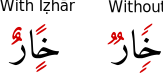

The mushaf (copy of the Qurʾān) known as Madinah Mushaf or Uthmani Mushaf or even Saudi Mushaf, is one of the most well known Mushafs around the world.
It was calligraphed by Shaykh Uthman ibn Abduh ibn Husayn ibn Taha Alkurdi, commonly known as Shaykh Uthman Taha.
Shaykh Uthman Taha was born in Aleppo in 1934.
He obtained a BA in Sharīʿah from the University of Damascus.
He also studied the Arabic language, Islamic decorative arts, and painting.
He studied calligraphy from various teachers.
These included Muhammad Ali al-Mawlawi, Ibrahim al-Rifa’i (Aleppo), Muhammad Badawi al-Diyrani (Damascus) and Hashim al-Baghdadi.
He has also received ijāzah in calligraphy from Hamid al-Almidi, the so-called master of calligraphers in the Muslim World.
He wrote his first Mushaf in 1970.
He travelled to Saudi Arabia in 1988, and was thereafter appointed as a calligrapher at the King Fahd Glorious Qurʾān Printing Complex, Medinah.
He has since calligraphed four (or fourteen or more, depending on the source) in the 18 years (this is probably more now) he has been there.
More than 200 million (this number is probably higher now) copies of his Masahif have since been distributed worldwide.
Masahif calligraphed by him can be found in almost every corner of the world.
I believe the main reason for this is their distribution in the annual Ḥajj.
Source.
Now that you have a brief idea of who this man is, let’s take a closer look at his work.
Writing a mushaf is no easy task.
First, it is handwritten and no fonts are used.
Second, it is written on large paper which is then scanned to create plates for printing.
This adds to the difficulty of writing; writing at normal size (in notebooks, writing pads, etc.) is easier than writing at larger sizes.
Larger sizes also demand pens of wider widths.
Third, if a mistake is made, the whole page has to be redone (probably, I’m not sure, but it seems so).
Fourth, the rules for writing a mushaf are slightly different than for writing regular Arabic.
Thus, familiarity with such rules is a must.
Even after the mushaf is written, it has to be reviewed for mistakes.
It is after all, the book of Allāh the Majestic.
It will be used to aid memorization, for reference, and most important of all, for recitation.
As recitation is used to fulfill acts of worship, utmost care has to be taken to ensure no mistakes are present the mushaf.
However, I will not be talking about the technical aspects of mushaf calligraphy here.
We’ll look at how this mushaf was designed to help you, yes you, the reader.
Tanwīn with Ḥurūf al-Iẓhār
Ḥurūf al-Iẓhār are 6.
Ḥurūf al-Iẓhār
Iẓhār here, means to “make apparent.”
Tanwīn which has a ḥarf al-Iẓhār after it has to be pronounced clearly (or explicitly).
This is represented in the mushaf by the design of the tanwīn.

Design of Tanwīn
In order to understand this better, I’ll provide some āyāt which cover all possible cases.
First, let me show examples of kasratayn, or two kasrahs.
Sūrah al-Zalzalah: 7
Sūrah al-Zalzalah: 8
Second, let me show examples of fatḥatayn, or two fatḥahs.
Sūrah al-Fīl: 3
Sūrah al-ʿAlaq: 6
Lastly, let me show examples of ḍammatayn, or two ḍammahs.

Sūrah al-Qāriʿah: 11

Sūrah al-Bayyinah: 3
The Missing Sukūn
To be continued…